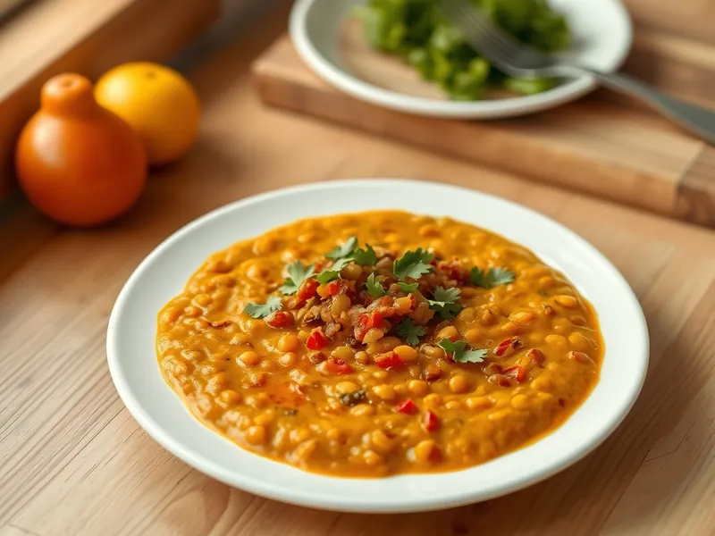

Фото: Иллюстрация ИИ, Cloudflare Workers AI
Дал из красной чечевицы
Густая индийская чечевица с куркумой, зирой, чесноком и помидором
30 мин3 порц.317 ккал на порциюБ 17 · Ж 10 · У 38Интернациональная кухня
Продукты на 3 порц.
- Чечевица красная1 стак.
- Вода3 стак.
- Лук репчатый1 шт
- Помидоры1 шт
- Чеснок2 зуб.
- Куркума0,5 ч. л.
- Зира1 ч. л.
- Растительное масло1,5 ст. л.
- Соль1 ч. л.
- Кинза по желаниюпо вкусу
Как готовить
- Промойте чечевицу в 3-4 водах, пока вода не станет почти прозрачной, на это уйдёт 2 минуты.
- Залейте чечевицу 600 мл воды, добавьте куркуму и доведите до кипения на сильном огне. Снимите пену и варите на слабом огне 15-18 минут, пока чечевица не разварится в пюре.
- Пока варится чечевица, мелко нарежьте лук, чеснок и помидор. Обжарьте лук в масле на среднем огне 5 минут до золотистого цвета, добавьте зиру и чеснок и жарьте 1 минуту.
- Положите помидор и тушите 3 минуты, пока он не размякнет.
- Переложите зажарку в чечевицу, посолите, перемешайте и прогрейте 2 минуты. Дал должен быть густым, как жидкое пюре.
- Посыпьте кинзой и подавайте с рисом или лепёшкой.
Совет. Чечевица сильно густеет при остывании, поэтому при разогреве добавьте 2-3 ложки горячей воды.